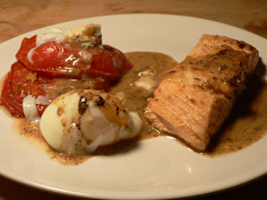

Bacon salmon
Ever since I heard that people could wrap salmon in bacon and fry it up, I’ve wanted to try it. Flipping through the beautiful Lutèce cookbook at work today, I came across Chef André’s recipe for Darne de saumon au lard. I had everything but the bacon and salmon, and a quick trip to Garden of Eden took care of that.
This isn’t the first André Soltner recipe I’ve tried, and I’ve glanced at just about all of the recipes in that book. Lovely as they may sound, those things are hard. He wants you to make aspic for a cold summer lunch. He wants you to bake whole truffles in your own pâte feuilletée. The man is no joke. I told him that I tried his onion tart, and he said that one has to start somewhere.
The recipe wants you to team the salmon with a dainty garnish of boiled cabbage and carrots. This didn’t appeal to me today, so I decided to fry up slices of tomato and top them with roquefort and David Chang’s bath-cooked eggs, the directions for which I’ve had sitting in my kitchen for months.

Everything went as planned, although I didn’t have the food processor necessary to purée the “batter” for the salmon. I diced it as finely as possible, and it adhered somewhat to the fish. I also went ahead and dipped my tomato slices in it, and then I just fried up what was left and used it as a garnish.
Darne de saumon au lard (modified considerably)
Cook 3 ounces of thin bacon strips for two minutes, add 1/2 cup of milk to it and some fresh thyme, and bring the milk to a boil. Lower the heat, cover it, and cook for ten minutes. Remove the thyme, and purée the bacon and milk. Mix it in a bowl with 1/2 cup of bread crumbs, an egg, some parsley, and salt and pepper.
Cut 1.5 pounds of skinless salmon into four portions, dip it in the batter, and fry it in oil.
He then asks you to make a healthy sauce consisting of 6 tablespoons of butter, 2 tablespoons of heavy cream, 2 tablespoons of vinegar, and pepper. I used butter, crème fraîche, and sherry.
The flavors were all there, but I really think that puréeing the bacon and milk would have made them more pervasive in the finished dish. Also, my bath-cooked eggs were closer to hardboiled; I was hoping to see them cascade over the tomatoes like a creamy, goldenrod waterfall. Of course an egg always tastes good, especially when it’s sitting next to pungent roquefort.
Comments
I simply don’t know how you cope without a food processor! I use mine almost every day.
Just got my Cuisinart letter of credit today.
This sounds like a lot more work than wrapping salmon in bacon and cooking it. Did the finished product make you feel the work was worthwhile?
Not really, Julie, not really. Next time I’m just going to wrap it up.
Nothing like tomatoe with salmon, to me that’s a winner, I would always serve a simple tomatoe, oignon sauteed in olive oil, this is the best side dish for salmon to me…hmmmmm
Great choice!
You over cooked the salmon.
DP: how about I take you out in the streets and overcook you?
Add a comment